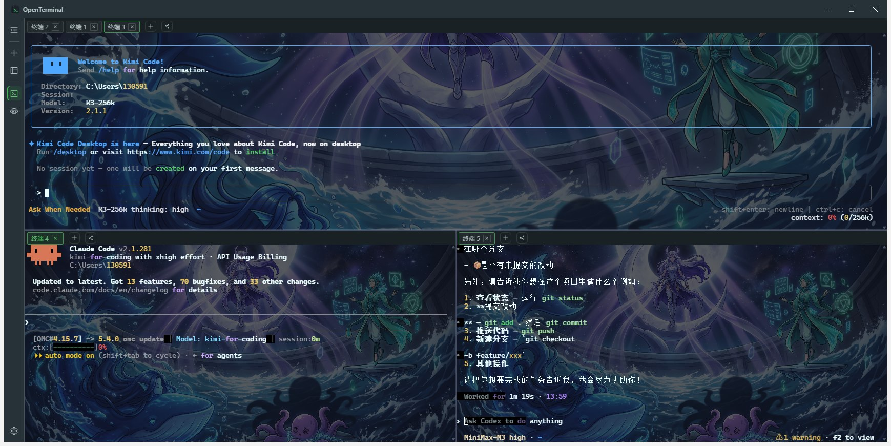
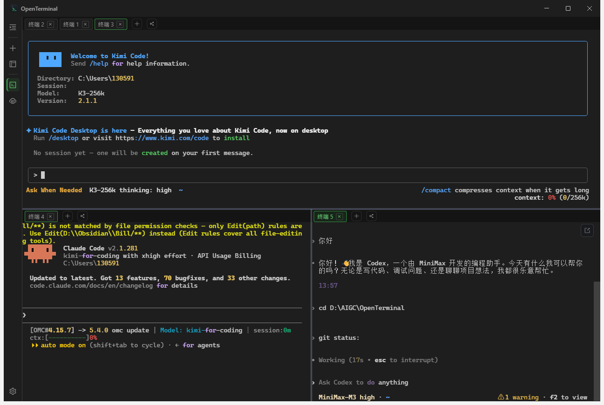
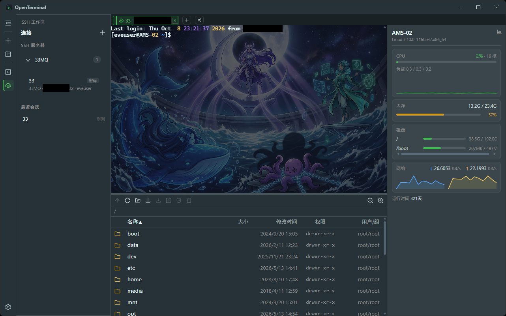
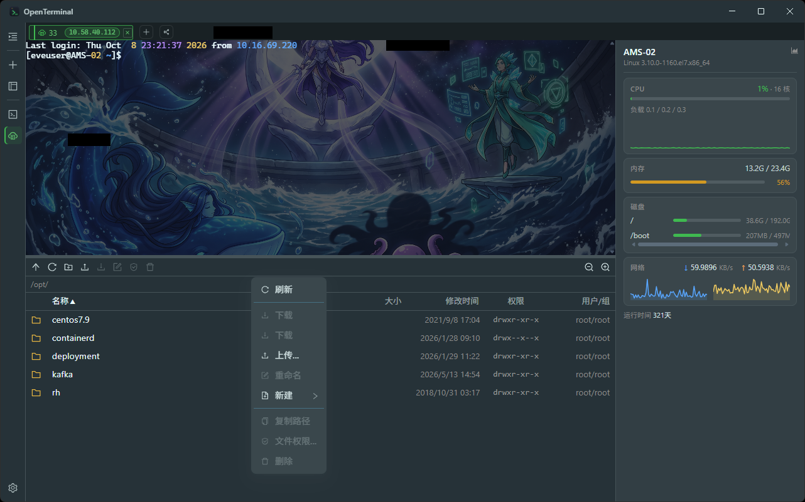
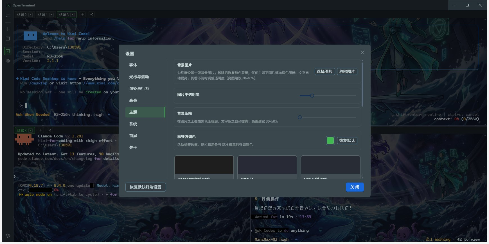
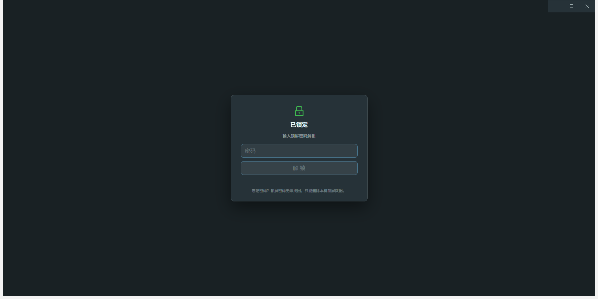

开源桌面终端 · MIT 协议
本地终端、SSH 与 SFTP
装进同一个桌面应用
OpenTerminal 面向开发和运维场景：WebGL 加速的终端渲染、可分屏的 SSH 会话、
内置 SFTP 文件管理与广播输入。安装即用，支持自动更新。
当前版本 v1.0.31 · NSIS exe 安装包，支持应用内自动更新。

三路分屏并行运行 AI 编程 Agent，背景图与压暗层可自定义
当前版本 v1.0.31
Windows 10 / 11 · x64
MIT 开源协议
exe 支持应用内自动更新
Capabilities
核心能力
按使用场景划分的能力组，左右拖动或用箭头浏览；完整清单见仓库 README。
01
终端核心
- node-pty 本地会话，自动探测 PowerShell / zsh / bash
- xterm.js WebGL 渲染，声明 256 色与真彩，异常自动降级
- 内嵌搜索（Ctrl+F）、命令历史、粘贴风险确认
- 关键词高亮 22 条内置规则，支持自定义正则与三档强度
- 字体、字重、字距、行高、光标样式实时生效
02
SSH 会话
- ssh2 实现：密码、私钥（文件或粘贴内容）、SSH Agent
- 多路分屏与广播输入，一次操作下发到多台主机
- 主机指纹校验、首次连接确认、变更告警
- ZMODEM 传输支持（sz / rz）
- OSC 7 上报工作目录，新会话按上次位置恢复
03
SFTP 文件面板
- 列表头列分明：名称、大小、修改时间、权限、用户/组
- 点击列头排序；文件名解析为真实用户与组名
- 字体缩放 80%–180%，Ctrl+滚轮或工具栏按钮
- 上传下载、同名覆盖确认、chmod / chown 编辑
- 大目录虚拟滚动，上万条目不卡窗口
04
工作区与布局
- dockview 分屏：任意拆分、拖拽、合并与浮动
- 布局模板保存与一键套用
- 启动恢复上次会话布局
- 界面缩放 50% 至 150%
05
主题与外观
- 主题编辑器：22 个颜色位逐项调整，实时预览
- 内置 11 套主题，跟随系统明暗自动切换
- 自定义背景图片、不透明度与压暗层
- 标签强调色、高亮配色跟随主题
06
效率工具
- 命令库：保存常用命令片段，跨会话发送到指定终端
- 高亮规则集按主机绑定，不同服务器不同配色
- 规则导入导出、实时预览与命中统计
- 会话快照与恢复、终端标签自动命名
07
系统监控
- CPU、负载、内存、磁盘、网络实时面板
- 每核占用与磁盘分区明细
- 运行时长与网络速率曲线
- 随会话打开，不额外占用通道
08
锁屏与安全
- Ctrl+L 一键锁屏，支持闲置自动锁定与启动即锁
- 密码经 scrypt 加盐哈希存储，不落盘明文
- 输错触发递增冷却；锁定期间禁用菜单与刷新快捷键
- 锁屏只是遮罩：背后会话与传输不中断
← 拖动浏览 · 共 8 组能力

Workbench
AI Agent 工作台
- 多路分屏并行运行 Kimi Code、Claude Code、Codex 等 AI 编程工具
- 为高频刷新的 TUI 界面优化：终端尺寸去抖同步，避免反复重绘
- 中文输入法候选窗紧贴光标，TUI 内输入中文不再漂移
- 关键词高亮自动标出错误、警告、HTTP 状态码与百分比


列表空白处右键同样是完整文件菜单，行内右键则作用于所选条目
SFTP
远程文件面板
- 列表头列分明：名称、大小、修改时间、权限、用户/组，点击列头排序
- 文件名解析为真实用户与组名（root/root、eveuser/eveuser），不再只有数字
- 字体缩放 80%–180%：Ctrl+滚轮或工具栏按钮，行高与字号联动并记忆
- 上传 / 下载、同名覆盖确认、chmod 权限与 chown 属主编辑
- 大目录虚拟滚动，上万条目不卡窗口

Customize
定制与效率
- 主题编辑器：22 个颜色位逐项调整，实时预览；支持自定义背景图片、不透明度与压暗层
- 内置 11 套主题，跟随系统明暗自动切换
- 命令库：保存常用命令片段，跨会话发送到指定终端
- 启动恢复上次会话布局；界面缩放 50% 至 150%
- 四语言界面：简体中文、繁体中文、English、日本語

Security
锁屏与安全
- Ctrl+L 一键锁屏，支持闲置自动锁定与启动即锁
- 锁定期间禁用应用菜单、页面刷新与开发者工具快捷键
- 密码经 scrypt 加盐哈希存储，不落盘明文；输错触发递增冷却
- 锁屏只是遮罩：背后的终端会话与文件传输保持运行不中断
Download
下载
从 GitHub Releases 下载；全部历史版本在同一页面。
| 安装包 |
适用场景 |
大小 |
链接 |
| OpenTerminal-1.0.31-setup.exe |
NSIS 安装包，支持应用内自动更新（推荐） |
109 MB |
下载
|
| 历史版本 |
全部发布记录与更新说明 |
- |
releases 列表
|
自动更新说明
应用内检查更新优先访问 GitHub Releases（跟随系统代理），失败时自动回退国内 git.codingplan.site 更新通道（直连）。
更新包经 SHA-512 校验后安装。更新说明文字从发布通道的 release-notes.md 读取，与每次发布同步更新。
自 v1.0.22 起不再提供 MSI 安装包，统一使用 NSIS exe。
Changelog
近期更新
1.0.312026-10-21
- 双击图标栏的「终端工作区 / SSH 工作区」当前按钮，可快速展开或收起侧栏
- 单击仍然只切换工作区，双击另一个工作区按钮也只切换，侧栏状态不受影响
- 键盘（Enter / 空格）触发保持单击语义，无障碍操作不受影响
1.0.302026-10-18
- 中文显示更准：终端启用 Unicode 11 宽度表，中文、全角符号与表格线对齐正确；设置新增「中文字体」回退槽位
- 新增自定义可点击链接规则：正则捕获组可展开为 http/https 链接，Ctrl+点击打开；高亮规则新增「按行匹配」开关
- 修复彩色 TUI 输出在高亮区段后掉色、ls -l 权限位高亮在多行下失效、含空格或括号的字体名静默失效；非法配置导致窗格崩溃会在启动时自动修复
- 自定义正则加入 ReDoS 防护：执行前在主进程 Worker 校验，单条 500ms 硬超时，超时规则自动隔离；内置预设免校验
- 诊断日志区分「真实长任务」与调度延迟，并新增 reflow、写入积压、WebGL 生命周期记录，卡顿定位更准
1.0.292026-10-17
- 浅色主题可读性重做：三套内置浅色主题的终端 16 色与前景文字全部达到 WCAG AA（≥ 4.5:1），并开启最低对比度兜底
- GitHub Light 纯白背景改为柔和的 #f6f8fa，长时间使用不刺眼
- 侧栏、标签栏、SFTP / 监控 / 设置等面板配色统一跟随主题，浅色下不再有看不清的文字
1.0.282026-10-16
- 修复应用内更新会下载两次的问题：禁用注定失败的差量下载，每次更新恰好一次整包下载，进度条只走一遍
1.0.272026-10-15
- 新增关闭标签二次确认：终端 / SSH 两个独立开关（默认关闭），设置 → 渲染与行为
- 覆盖标签 × 按钮、右键「关闭 / 关闭其他 / 关闭右侧」与键盘 Delete / Backspace 误关——点击标签后按 Backspace 不再直接关闭
- 批量关闭整批只确认一次；开关保存后立即生效，无需重启
完整日志见仓库
CHANGELOG.md。